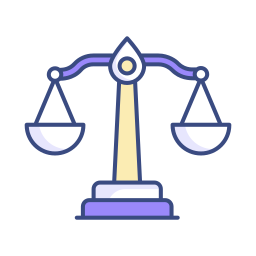

O Título I determina em quatro artigos a quem a lei é direcionada, ressaltando ainda a responsabilidade da família, da sociedade e do poder público para que todas as mulheres possam ter o exercício pleno dos seus direitos.
Saiba quais são os principais dispositivos da Lei n. 11.340/2006 e os direitos garantidos pela legislação que protege as mulheres contra a violência doméstica e familiar..

A Lei Maria da Penha foi sancionada em 7 de agosto de 2006 pelo presidente Luiz Inácio Lula da Silva. Com 46 artigos distribuídos em sete títulos, ela cria mecanismos para prevenir e coibir a violência doméstica e familiar contra a mulher em conformidade com a Constituição Federal (art. 226, § 8°) e os tratados internacionais ratificados pelo Estado brasileiro (Convenção de Belém do Pará, Pacto de San José da Costa Rica, Declaração Americana dos Direitos e Deveres do Homem e Convenção sobre a Eliminação de Todas as Formas de Discriminação contra a Mulher).
O Título I determina em quatro artigos a quem a lei é direcionada, ressaltando ainda a responsabilidade da família, da sociedade e do poder público para que todas as mulheres possam ter o exercício pleno dos seus direitos.
Já o Título II vem dividido em dois capítulos e três artigos: além de configurar os espaços em que as agressões são qualificadas como violência doméstica, traz as definições de todas as suas formas (física, psicológica, sexual, patrimonial e moral).
Quanto ao Título III, composto de três capítulos e sete artigos, tem-se a questão da assistência à mulher em situação de violência doméstica e familiar, com destaque para as medidas integradas de prevenção, atendimento pela autoridade policial e assistência social às vítimas.
O Título IV, por sua vez, possui quatro capítulos e 17 artigos, tratando dos procedimentos processuais, assistência judiciária, atuação do Ministério Público e, em quatro seções (Capítulo II), se dedica às medidas protetivas de urgência, que estão entre as disposições mais inovadoras da Lei n. 11.340/2006.
No Título V e seus quatro artigos, está prevista a criação de Juizados de Violência Doméstica e Familiar contra a Mulher, podendo estes contar com uma equipe de atendimento multidisciplinar composta de profissionais especializados nas áreas psicossocial, jurídica e da saúde, incluindo-se também destinação de verba orçamentária ao Judiciário para a criação e manutenção dessa equipe.

A Central de Atendimento à Mulher é um serviço desenvolvido para enfrentar a violência contra as mulheres, oferecendo três modalidades de atendimento: recebimento de denúncias, orientação às vítimas de violência e informações sobre leis e campanhas.
Ligue 180. Não se cale, denuncie.